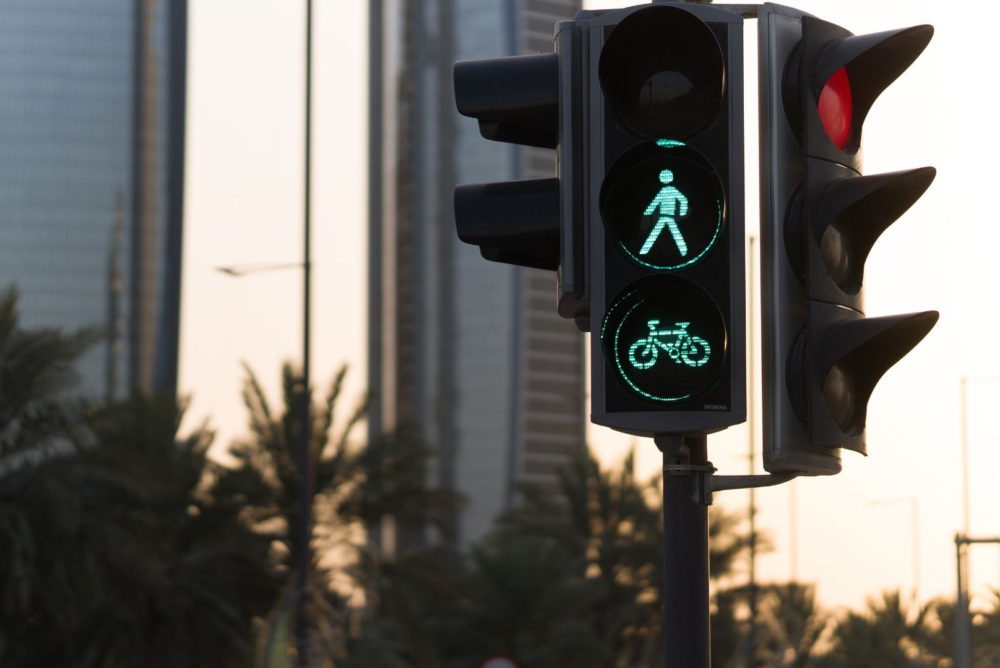

Importância de um Semáforo Inteligente
Semáforos inteligentes podem monitorar o tráfego em tempo real e ajustar os tempos de sinalização de acordo com a demanda. Isso ajuda a reduzir congestionamentos, melhorar o fluxo de veículos e diminuir o tempo de viagem dos motoristas.
Ao analisar padrões de tráfego e detectar situações de risco, como excesso de velocidade ou colisões iminentes, os semáforos inteligentes podem tomar medidas proativas para melhorar a segurança viária. Por exemplo, eles podem reduzir a velocidade do tráfego em áreas perigosas ou fornecer tempo adicional para pedestres atravessarem a rua com segurança.
Os semáforos inteligentes podem se integrar a sistemas mais amplos de gerenciamento de tráfego, como ITS, para uma abordagem coordenada e holística do transporte urbano. Isso inclui sincronização de semáforos ao longo de rotas principais, priorização de transporte público e compartilhamento de dados em tempo real com outros dispositivos e sistemas de monitoramento.